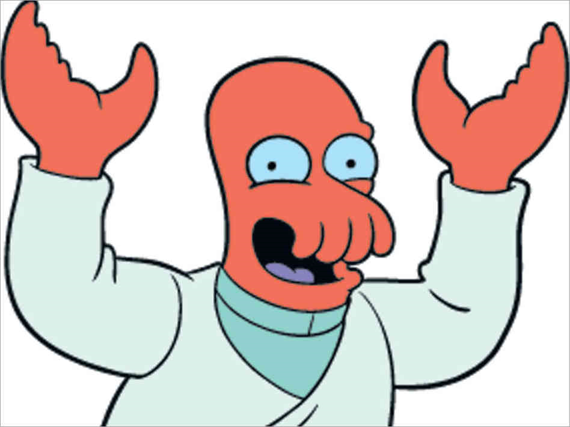

Apresentação
Olá! Eu sou o Renato! Sou esse cara de verde logo abaixo:
Nessa foto, estava tentando imitar o Zoidberg, que escolhi como personagem para ser meu avatar. Eis aqui uma imagem dele:
A minha escolha para avatar foi simples: já que preciso ter um avatar, gostaria de escolher algum personagem de alguma animação. Então... por que não o Zoidberg?